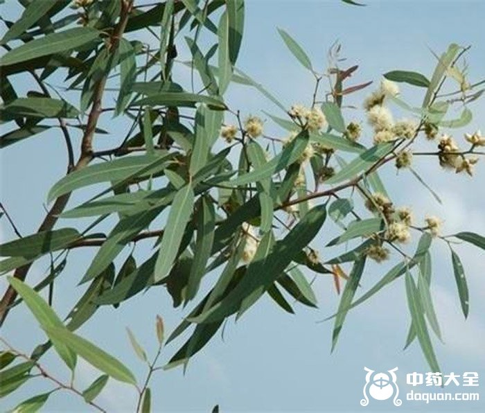
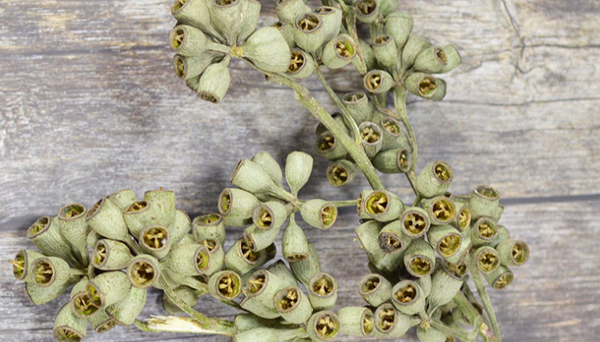
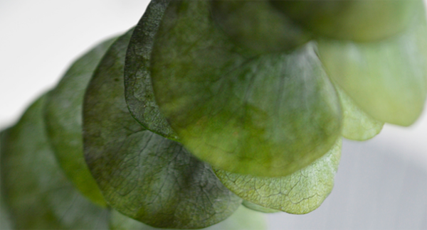

桉叶的药用价值很高，市场上把桉叶制成桉叶糖、桉叶粉、桉叶油，可见桉叶的应用是广泛的，其中主要为解毒、祛痰，下面中药大全小编和大家详细了解桉叶的功效与作用。

【桉叶的功效与作用】：祛痰、解毒、预防感冒、痢疾、关节疼、膀胱炎，烫伤，疥癣，丹毒，神经性皮炎，湿疹，痈疮肿毒
【功能】
1、解热，治肠炎及膀胱疾患。---《观代实用中药》
2、可以预防感冒，用来治疗痢疾。---《广西中药志》
3、煎液，治丹毒与其他传染性化脓症。---李承祜《生药学》
4、关节疼、外科手术后罨包。---《四川中药志》
【选方】
1、治肠炎下痢
2、治关节疼痛
3、治膀胱炎，小便下血疼痛
桉叶、石苇、海金砂。煎汤服。(《四川中药志》)
4、治疥癣
桉树叶煎水洗。(《云南中草药》)
5、治流脑、流感、钩虫病
桉树叶三钱。水煎服，日服二次。(《文山中草药》)
6、治神经性皮炎，痈疮肿毒，麻风溃疡
桉树叶适量，煎水外洗。(《文山中草药》)
7、治腮腺炎，结膜炎

核树叶三至五钱。煎服。(《云南中草药选》)
8、治皮肤湿疹
桉树叶熬膏外敷。(《云南中草药选》)
9、治烧烫伤，外伤出血
桉树叶研粉撒伤部。(《云南中草药选》)
【使用方法】
内服：煎汤，3～8钱。
外用：煎水洗、研粉撒或熬膏敷。
【临床应用】：有一定临床功效，不代表所有人有效，仅供参考。
1、预防麻疹
用桉树叶60斤，加水350斤，煎成150斤。3个月至1岁，每次1食匙;2～4岁每次2食匙;5岁以上，每次3～4食匙;均日服3次，共服9天，临床300人，显示80%有效。
2、治疗钩虫病
取云南普洱县产的桉树叶，阴至半干。每次1市两，切碎加水漫没，煮3小时左右，过滤浓缩至50～60毫升。于饭前1次服下，不加泻剂。临床370人，60%有效。
3、治疗细菌性痢疾

应用15%桉叶煎剂对70例菌痢行保留灌肠，每天1次，每次100毫升。观察结果，大便次数恢复正常平均4.7天，腹痛、里急后重及脓血便消失平均3～4天。临床试验200人全部有效。
4、治疗肺结核
一口服法：50%桉叶煎剂每次20～50毫升，日服3次，连服3个月为一疗程;如一般情况良好者，休息半个月，再服一疗程。小儿和妇女可用按叶糖浆(煎剂1000毫升中，加单糖浆150～200毫升)20～50毫升，日服3次，连服3个月。
5、用于外科消毒、抗感染
局部外用：25%桉叶洗剂或10%桉叶油乳剂，用于冲洗伤口可代替盐水及呋喃西林溶液;用于拆线捎毒及伤口周围消毒可代替碘酒，酒精。
6、治疗霉菌牲阴道炎
先用0.5%桉叶溶液冲洗阴道，再塞以有线桉液棉栓，12小时后自行拉出，每日1次，6天为一疗程。如外阴有湿疹或瘙痒，可用桉油软膏外搽。72例患者经1～3疗程观察，治愈69例，无效3例，复发8例。
7、治疗急性扁桃体炎
鲜桉树叶阴干后取1.5两，加水500毫升，用温火煎至250～300毫升(1日量)，过滤后分4次服。治疗24例(其中急性陷窝性扁桃体炎9例，扁桃体周围脓肿3例)，服药后局部炎症，主要症状及白细胞计数均于2～7天恢复正常。
以上为桉叶的功效与作用，查询更多中药的功效与作用请关注中药大全。